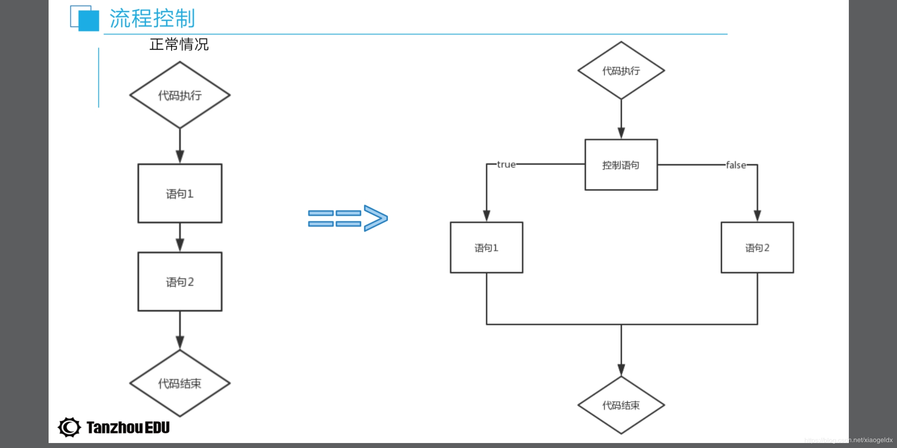

本文转载自https://blog.csdn.net/xiaogeldx/article/details/85412716
对于算术运算符要注意的是：字符串和数字之间的相加减，以及布尔值类型和字符，数字之间的相加减
var numa = 10;
var numb = 4;
document.write(numa+numb); //14
console.log(numa-numb); //6
console.log(numa*numb); //40
console.log(numa/numb); //2.5
var str = "1";
console.log(numa+str); //101 减法不适用，减法只做数值的减法
console.log(numa-str); //9
console.log(numa+true); //11
console.log(numa-false); //10
console.log(numa+null); //10
console.log(numa+undefined); //NaN
console.log(0.1+0.2); //0.30000000000000004赋值运算符有：=,+=,-=,*=,/=
var num = 10;
console.log("=",num); //= 10
num += 5; //num = num + 5
console.log("+=",num); //+= 15
num -= 4; //num = num - 4
console.log("-=",num); //-= 11
num /= 3; //num = num / 3
console.log("/=",num); // /= 3.6666666666666665
num *= 2; //num = num * 2
console.log("*=",num); //*= 7.333333333333333
num %= 1; //num = num % 1
console.log("%=",num); //%= 0.33333333333333304比较运算符只会返回布尔值：true/false
var a = 10;
var b = 15;
var c = '10';
console.log(a>b); //false
console.log(a>=b); //false
console.log(a<b); //true
console.log(a<=b); //true
console.log(a==c); //true 比较数值
console.log(a===c); //false以下在进行判断的时候为假
１.０
２.null
3.undefined
4.NaN
5.' '（空字符串）
6.false
需要注意：逻辑运算符两边的数值均为布尔值，或者其他数据类型
var a = 10>4 && 3>4;//1*0=0
console.log(a); //false
var b = 10>5 && 3>2;
console.log(b); //true
var c = 1>2 || 2<5;//0+1=1
console.log(c); //true
var d = 1 || 0 || '';
console.log(d); //1
var e = 22 && undefined || null;
console.log(e); //null
var f = !0;
console.log(f); //true
var g = 10 || 3 && false;
console.log(g); //10
var h = 1 && null && undefined;
console.log(h); //null <script type="text/javascript">
var a = 'xiaoge';
if(a=='xiaoge'){
alert("111")
}else if(a=='xiaogege'){
alert("222")
}else{
alert("333")
}
</script >2.注意："1" != 1,不要忘了break(不然一直向下运行)
<script type="text/javascript">
var a = '1';
switch(a) {
case 1: //'1'不等于1
document.write('周零');
case '1':
document.write('周一');
break;
case '2':
document.write('周一');
break;
case '3':
document.write('周一');
break;
case '4':
document.write('周一');
break;
case '5':
document.write('周一');
break;
case '6':
document.write('周一');
break;
case '7':
document.write('周日');
break;
default:
document.write('找不到周几');
}
</script>
for(循环条件){
显示结果
} //结尾不要有;
for (var i=1;i<10;i++) { #注意不要忘了i++，如果没有i++就是死循环，无法执行
document.write(i)
} ＃１２３４５６７８９
九九乘法表：
<script type="text/javascript">
for (var i=1;i<=9;i++) {
document.write('<br>')
for (var j=1;j<=i;j++){
var sum = i*j;
document.write(i+"*"+j+"="+sum+" "); +是连接作用
}
} 先判断再执行
var a = 0;
while (a<10){
document.write(a);
a++;
}先执行再判断
var b = 1;
do {
document.write(b);
b++;
}while (b<10)slice():切割
var str1 = 'hello world';
var str2 = 'HEllo GIrl';
document.write(str1.length+"<br>"); // 11空格算一个
document.write(str1[0]+"<br>") ; //h
document.write(str1.charAt(3)+ '<br>'); // l
document.write(str1.indexOf("l")+"<br>");//2 第一个l索引是2
document.write(str1.split(" ")+"<br>"); //把分割点变成逗号
document.write(str1.slice(0,4)+"<br>"); //hell,左闭右开
document.write(str1.slice(4,2)+"<br>"); //空,左闭右开,考虑顺序
document.write(str1.substring(1,4)+"<br>"); //ell
document.write(str1.substring(4,2)+"<br>"); // ll，不考虑顺序
document.write(str1.substring(8,4)+'<br>');// o wo 小的数闭大的数开
document.write(str1.replace('he',"h")+"<br>"); //hllo world
document.write(str1.replace('o',"m")+"<br>"); //hellm world,替换第一个
document.write(str1.toUpperCase()+'<br>');//HELLO WORLD
document.write(str2.toLowerCase()+'<br>');//hello girl数组常用方法：
length:长度
[]:下标
push():追加
Unshift():添加
Pop():后删
Shift();前删
indexOf():索引
slice();切片
splice():替换
join():拼接
Sort():排序
Reverse():反向
Concat():连接
var li = [1,2,'haha','yang'];
var li1 = ['xiaoge','long'];
var li2 = ['na','yan','yi'];
document.write(li.length+'<br>');//4
document.write(li[1]+'<br>');//2
document.write(li.indexOf('yang')+'<br>');//3
document.write(li.push('洋',3)+'<br>');//6
document.write(li+'<br>');//1,2,haha,yang,洋,3 追加到数组后面
document.write(li.unshift('na')+'<br>');//7
document.write(li+'<br>');//na,1,2,haha,yang,洋,3 添加到数组前面
document.write(li.pop()+'<br>');//3 从数组后面删除 显示删掉的
document.write(li+'<br>');//na,1,2,haha,yang,洋
document.write(li.shift()+'<br>');//na 从数组前面删除 显示删掉的
document.write(li+'<br>');//1,2,haha,yang,洋
document.write(li.slice(1,3)+'<br>');//2,haha 左闭右开
//splice() 方法可删除从 index 处开始的零个或多个元素，并且用参数列表中声明的一个或多个值来替换那些被删除的元素。
//如果从 arrayObject 中删除了元素，则返回的是含有被删除的元素的数组。
//从索引1开始，删除0个，用'na'替换索引1删除的元素
document.write(li.splice(1,0,'na')+'<br>');//
document.write(li+'<br>');//1,na,2,haha,yang,洋
//从索引1开始，删除一个('na')，用'yu','wen'代替删除的'na'
document.write(li.splice(1,1,'yu','wen')+'<br>');//na
document.write(li+'<br>');//1,yu,wen,2,haha,yang,洋
//从索引0开始，删除s三个(1,'yu','wen')，用'yu','wen'代替删除的1,'yu','wen'
document.write(li.splice(0,3,'yu','wen')+'<br>');//1,yu,wen
document.write(li+'<br>');//yu,wen,2,haha,yang,洋
document.write(li.join('-')+'<br>');//yu-wen-2-haha-yang-洋
document.write(li.concat(li1,li2)+'<br>');//yu,wen,2,haha,yang,洋,xiaoge,long,na,yan,yi
document.write(li+'<br>');//yu,wen,2,haha,yang,洋
document.write(li.sort()+'<br>');//2,haha,wen,yang,yu,洋 按照ascii码正向排序
document.write(li.reverse()+'<br>');//洋,yu,yang,wen,haha,2 反向补充方法：
toString():字符串
toFixed():小数字符串
isNaN():判断NaN
isArray():判断数组
parseInt():整数
parseFlost():浮点数
Number():数字
<!DOCTYPE html>
<html lang="en">
<head>
<meta charset="UTF-8">
<title>Title</title>
<link rel="stylesheet" href="css/reset.css">
<link rel="stylesheet" href="css/test.css">
<script src="js/test.js"></script>
</head>
<body>
<button>图一</button>
<button>图二</button>
<button>图三</button>
<button>图四</button>
<button>修改</button>
<div id="div1" style="width: 400px; height: 400px;border: 1px solid red;"></div>
<script type="text/javascript">
var btn = document.getElementsByTagName('button');
var box = document.getElementById('div1');
btn[0].onclick = function () {
div1.style.background = "url('image/xingye1.jpg')";
};
btn[1].onclick = function () {
div1.style.background = "url('image/xingye2.jpg')";
};
btn[2].onclick = function () {
div1.style.background = "url('image/zql1.jpeg')";
};
btn[3].onclick = function () {
div1.style.background = "url('image/zql2.jpg')";
};
var a = 0;
btn[4].onclick = function () {
a += 1;
if(a%4==1){
div1.style.background = "url('image/zql1.jpeg')";
}else if(a%4==2){
div1.style.background = "url('image/zql2.jpg')";
}else if (a%4==3){
div1.style.background = "url('image/xingye1.jpg')";
}else{
div1.style.background = "url('image/xingye2.jpg')";
}
};
</script>
</body>
</html>